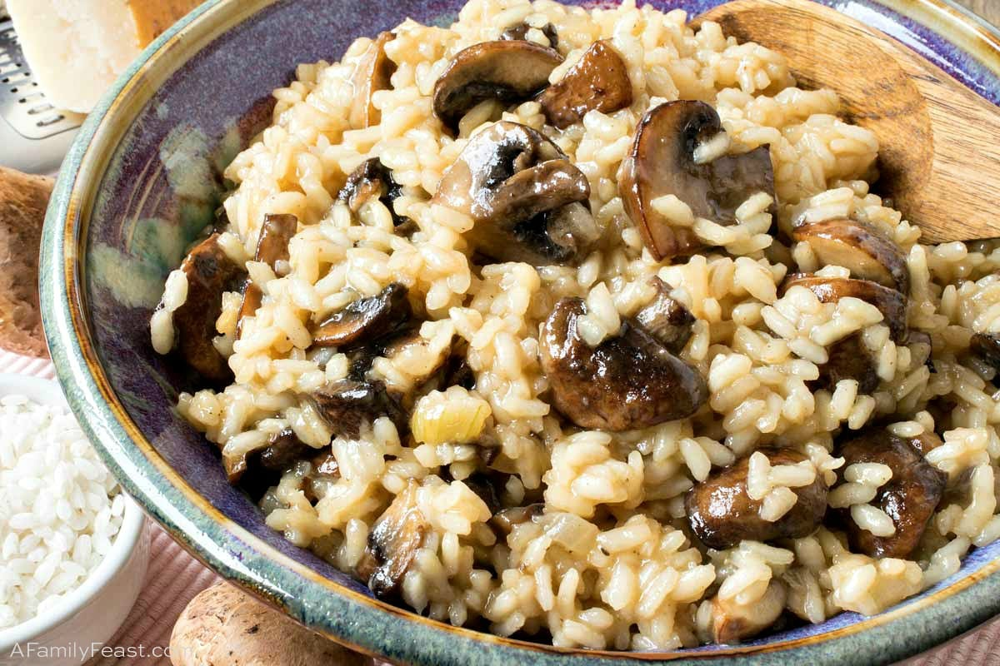

Mushroom Risotto

Description
Mushroom Risotto is a creamy and comforting Italian dish that
highlights the rich flavor of mushrooms combined with the creaminess of Arborio rice.
This recipe delivers a smooth texture and savory taste, perfect as a main dish or as a side for meat or fish.
Ingredients
- 1 and half cups Arborio rice
- 4 cups vegetable or chicken broth (kept warm)
- 1 cup mushrooms (sliced, any variety)
- Half cup onion (finely chopped)
- 2 tbsp olive oil
- 2 tbsp butter
- Half cup dry white wine (optional)
- Half cup Parmesan cheese (grated)
- Salt and pepper to taste
- Fresh parsley for garnish
Step by Step
- Heat olive oil and 1 tbsp of butter in a large pan.
Add onions and sauté until translucent.
- Add mushrooms and cook until tender and lightly browned.
- Stir in the Arborio rice and toast it for 1-2 minutes, mixing well so it absorbs the flavors.
- Pour in the white wine (if using) and stir until absorbed.
- Begin adding warm broth, one ladle at a time, stirring constantly until the liquid is absorbed before adding more.
Repeat until the rice is creamy and cooked al dente (about 18-20 minutes).
- Turn off the heat, add the remaining butter and Parmesan cheese, and mix until smooth and creamy.
- Season with salt and pepper, garnish with fresh parsley, and serve hot.
- SERVE AND ENJOY!
Home